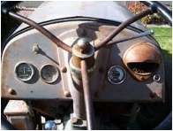

FMP 211 :: Lecture 04 ::TRACTORS- TYPES AND UTILITIES

Tractor is a self propelled power unit having wheels or tracks for operating agricultural implements and machines including trailers. Tractor engine is used as a prime mover for active tools and stationary farm machinery through power-take off (pto) or belt pulley
 |
|
| wheel tractors | |
TRACTOR DEVELOPMENT
The present tractor is the result of gradual development of machine in different stages. History of tractor development is given below.
1890- The word tractor appeared first on record in a patent issued on a tractor or traction engine invented by George H. Harris of Chicago
1906- Successful gasoline tractor was introduced by Charles w. Hart and Charles H. Parr of Charles City, Iowa
1908- First Winnipeg tractor trails were held
1911- First tractor demonstration was held at Omaha ( Nebraska)
1915-1919- Power take off was introduced
1920-1924- All purpose was developed
1936- 1937 – Diesel engine was used in tractor and pneumatic tires were introduced
1950-1960- Manufacturing of diesel tractors on extensive basis throughout the world was taken up
1960-1961 – Tractor manufacturing was started in India by first manufacturer M/s Eicher Good Earth
1962-1970 – Manufacturers like Tractor and Farm Equipment , Madras , Hindustan tractors at Baroda, Escorts Tractors at Faridabad and International Harvester in Bombay started work during this period
1971- Escorts Tractor Ltd. Started producing Ford Tractors
1973- Manufacture of HMT Tractor was started
1974- Manufacture of Pitti and Kirlosker Tractor was started
1975- Harsha Tractors was established
1981- Auto tractors were started
1982- Universal Tractors was established
1983-2003- GTCL tractors, M.M Tractors, Sonalika, VST, L&T, Bajaj Tractors were produced
CLASSIFICATION OF TRACTORS
Tractors can be classified into three classes on the basis of structural design
- Wheel tractor
- crawler tractor
- walking type tractor
Wheel tractor
Tractors having three or four pneumatic wheels are called wheel tractors. Four wheel tractors are popular everywhere
| Three wheel tractor | Four wheel tractor |
Crawler tractor
This type is also called Track type tractor or Chain type tractor. In such tractors , there is endless chain or track in place of pneumatic wheels
Crawler tractors
Power tiller
Power tiller is a walking type tractor. This tractor is usually fitted with two wheels only. The direction of travel and its controls for field operation is performed by the operator, walking behind the tractor
Power tillers
On the basis of purpose, wheeled tractors are classified into three groups
a. General purpose tractor b. Row crop tractor
c. Special purpose tractor
a) General purpose tractor
It is used for major farm operations such as ploughing, sowing, harvesting and transporting works. Such tractors have i) low ground clearance ii)Increased engine power iii) good adhesion and iv) wide tyres

General purpose tractors
b) Row crop tractors
It is used for row crop cultivation. Such tractor is provided with replaceable driving wheels of different tread widths. It has high ground clearance to save damage of crops. Wide wheel track can be adjusted to suit inter row distance
Row crop tractors
c) Special purpose tractor
It is used for definite jobs like cotton fields, marshy lands, hill sides, garden etc. special designs are there for special purpose tractor.
Eg. a) Tractor with winch unit b) multi drive tractor c) tractor for golf grounds etc.
| Tractor with winch unit | Multi drive tractors | Tractor for golf grounds |
SELECTION OF TRACTOR
Selection of tractors depend up on following factors
- Land holding: Under a single cropping pattern, it is normally recommended to consider 1 hp for every 2 hectare of land. In other words , one tractor 20-25 hp is suitable for 40 hectare farm
- Cropping pattern: Generally 1.5 hectare/hp has been recommended where adequate irrigation facility are available and more than one crop is taken. So a 30-35 hp tractor is suitable for 40 hectare of land.
- Soil condition: A tractor with less wheel base , higher ground clearance and low overall weight may work successfully in lighter soils buy will not be able to give sufficient depth in black cotton soils
- Climatic condition: For very hot zone and desert area , air cooled engines are preferred over water cooled engines. Similarly for higher altitude air cooled engines are preferred because water cooled engines are liable to be frozen at high altitudes
- Repair facilities: It should be ensured that the tractor to be purchased has a dealer at near by place with all the technical skills for repair and maintenance of the machine.
- Running cost: Tractors with less specific fuel consumption should be preferred over others so that the running cost may be less.
- Initial cost and resale value: While keeping the resale value in mind , the initial cost should not be very high, otherwise higher amount of interest have to be paid
Test report: Test report of tractors released from farm machinery testing stations should be consulted for guidance
WHEEL TRACTOR
Components
- I.C Engine
- Clutch
- Transmission gears
- Differential unit
- Final drive
- Real wheel
- Front wheels
- Steering mechanism
- Hydraulic control and hitch system
- Brakes
- Power-take-off unit
- Tractor pulley
- Draw bar and
- Control panel
- I.C engine
Internal combustion of suitable horse power is used as a prime mover in a tractor. Engines ranging from 8 to 200 hp are used in agricultural tractors. In India , four wheel tractors for agricultural operations are fitted with 25-80 hp. Walking type tractors are fitted with 8-12 hp engines
- Clutch
Clutch is a device, used to connect and disconnect the tractor engine from the transmission gears and drive wheels. Clutch transmits power by means of friction between driving members and driven members
Necessity of clutch in a tractor
- Engine needs cranking by any suitable device. For easy cranking, the engine is disconnected from the rest of the transmission unit by the clutch. After starting the starting the engine, the clutch is engaged to transmit the power from engine to gear box
- In order to change the gears, the gear box must be kept free from engine power, otherwise the gear teeth will be damaged and engagement of gears will be difficult. This work is done by clutch
- When the belt pulley of the tractor works in the field it needs to be stopped with out stopping the engine. This is done by a clutch
3. power transmission system of a tractor)
Transmission is a speed reducing mechanism, equipped with several gears. It may be called a sequence of gears and shafts, through which the engine power is transmitted to the tractor wheels. The system consists of various devices, which cause forward and backward movement of tractor to suit different field conditions. The complete path of power from engine to wheel is called power train
Functions of power transmission system
- To transmit power from the engine to the rear wheels of the tractor
- To make reduced speed available, to rear wheels of the tractor
- To alter the ratio of wheel speed and engine speed in order to suit the field conditions
- To transmit power through right angle drive, because the crankshaft and rear axle are normally at right angles to each other.
The power transmission system consists of :
1. Clutch 2. Transmission gears
3. Differential 4. Final drive
5. Rear axle 6. Rear wheels
4. Transmission gears
A tractor runs at high speed, but the rear wheel of the tractor requires power at low speed and high torque. That’s why it becomes essential to reduce the engine speeed and increase the torque available at the rear wheel of the tractor because
2ΠNT
Power, kW = ------------
60 X 1000
Where,
T is torque in Newton –meter
N = speed in rev/min
If engine power is constant, it is obvious that for higher torque at wheels , low speed is required and vice versa.. So gear box is fitted between engine and rear wheels for variable speed and torque.
- Differential unit
Differential unit is a special arrangement of gears to permit one of the rear wheels of the tractor to rotate slower or faster than the other. While turning the tractor on a curved path, the inner wheel has to travel lesser distance than the outer wheel. The inner wheel requires lesser power than the outer wheel. This condition is fulfilled by differential unit, which permits one of the rear wheels of the tractor to move faster than the other at a turning point.
Differential Lock
Differential lock is a device to join both half axles of the tractor so that even if one wheel is less resistance , the tractor comes out of the mud etc. as both wheels move with the same speed and apply equal traction.
- Final drive
Final drive is a gear reduction unit in the power trains between differentials and drive wheels. Final drive transmits the power finally to the rear axle and the wheels. The tractor rear wheels are not directly attached to the half shafts but the drive is taken through a pair of spur gears. Each half shaft terminates in a small gear which meshes with a large gear called bull gear. The bull gear is mounted on a shaft, carrying the tractor rear wheel. The device for final speed reduction, suitable for tractor rear wheels is known as final drive mechanism.
- Steering mechanism
The system, governing the angular movement of front wheels of a tractor is called steering system. This system minimizes the efforts of the operator in turning the front wheels with the application of leverages. The different components of steering system are i)steering wheel ii) steering shaft iii)steering gear iv0 drag link v)steering arm vii) tie rod viii) king pin
When the operator turns the steering wheel, the motion is transmitted through the steering shaft to the angular motion of the pitman arm through a set of gears. The angular movement of the pitman arm is further transmitted to the steering arm through drag link and tie rods. Steering arm are keyed to the respective king pins which are integral part of the stub axle on which wheels are mounted. The movement of steering arm affects the movement of front wheel
- Hydraulic control system
It is a mechanism in a tractor to raise , hold or lower the mounted implement or semi-mounted equipments by hydraulic means. All tractors are equipped with hydraulic control system for operating three point hitch of the tractor. Hydraulic system works on PASCAL’s Law which states that pressure applied to an enclosed fluid is transmitted equally in all directions.
Basic components of hydraulic system
- Hydraulic pump
- Hydraulic cylinder and piston
- Hydraulic tank
- Control valve
- Safety valve
- Hose pipe and fittings
- Lifting arms
The hydraulic pump draws up oil from the oil reservoir and sends it to the control valve under high pressure. From the control valve, the oil goes to the hydraulic cylinder to operate the piston, which in turn, raises the arms. The implements attached with the arms are lifted up.
- Brakes
Brake is used to stop or slow down the motion of the tractor. It is mounted on the driving axle and operated by two independent pedals. Each pedal can be operated independently to assist the turning of tractor during field work or locked together by means of a lock.
Types of brakes – a) Mechanical brake b) hydraulic brake
- Power take off
It is a part of tractor transmission system. It consists of a shaft, a shield and a cover. The shaft is externally splined to transmit tortional power to another machine. A rigid guard fitted on a tractor covers the power-take-off shaft as a safety device. The guard is called power take off shield. As per ASAE standards PTO speed is 540+ 10 rpm when operating under load. In order to operate 1000 rpm PTO drive machine, a new standard has been developed.
| PTO on a tractor | PTO drive |
- Belt pulley
All tractors are provided with a belt pulley. The function of the pulley is to transmit power from the tractor to stationary machinery by means of a belt. It is used to operate thresher, centrifugal pump, silage cutter, and several other machinery. The pulley is located either on the left , right or rear side of the tractor. Pulley drive is engaged or disengaged from the engine by means of a clutch.
Belt pulley connected to tractor PTO
- Control board or dash board
The control board of a tractor generally consists of
1. Main switch
2. Throttle
3. Decompression lever
4. Hour meter
5. Light switch`
6. Horn button
7. Battery charging indicator
8. oil pressure indicator
9. Water temperature gauge
1. Main switch - When the main switch is on , the electric current floes in the electric circuit
2. Throttle lever - This lever is for increasing or decreasing the speed of the engine.
3. Decompression lever - This lever releases the compression pressure from the combustion chamber of the engine and helps to start the engine.
4. Hour meter - This meter indicates the engine hour as well as engine revolution per minute
5. Light switch - light switch is for light points only
6. Horn button - This is for horn of the tractor
7. Battery charger indicator - This indicates the charge and discharge of the battery.
8. Oil pressure indicator - this indicates the lubricating oil pressure in the system
9. Water temperature gauge - this indicates the temperature of water of the cooling system
|  | |
| Tractor dash board | |
IMPORTANT TERMS CONNECTED WITH TRACTORS
- Wheel base: Wheel base is the horizontal distance between the front and rear wheels of a tractor
- Ground clearance: It is the height of the lowest point of the tractor from the ground surface, the tractor being loaded to its permissible weight
- Track: Track in the distance between the two wheels of the tractor on the same axle., measured at the ground contact
- Turning space: It is the diameter of the smallest circle , described by the outer most point of the tractor, while moving at a speed not exceeding 3 km/hr with thr steering wheels in full lock.
- Cage wheels: It is a wheel or an attachment to a wheel with spaced cross bars for improving traction of the tractor in a wet field. It is generally used in paddy field
CRAWLER TRACTOR
A crawler tractor (also called: track-type tractor, tractor crawler, or track-laying vehicle) is a vehicle that runs on continuous tracks instead of wheels. In agriculture they are used for land clearing and land leveling works. The principal advantages of crawler tractor over wheeled tractors are that they are in contact with a larger surface area than the wheeled tractor, and as a result exert a much lower force per unit area on the ground than a conventional wheeled tractor of the same weight. This makes them suitable for use on soft, low friction and uneven ground such as mud, ice and snow. The principal disadvantage is that tracks are a more complex mechanism than a wheel, and relatively prone to failure modes such as snapped or derailed tracks.
Crawler tractor or chain type tractor has the following characterizes
- It is designed to secure good adhesion and transmit high drawbar pull in difficult field conditions, where wheel tractors fail to secure adequate grip on the soil
- It provides large area of contact with the ground
- It is useful at places where adhesion is difficult and rolling resistance is high
- It is most suited for heavy work, specially earth moving work and reclamation work
- It is used for all types of agricultural works with heavy implements
Crawler type tractors mainly consists of
1. Track frame assembly 2. Track chain
3. Steering clutch 4. steering brake
POWER TILLER
It is a prime mover in which the direction of travel and its control for field operation is performed by the operator walking behind it. It is also known as Hand tractor or walking type tractor. The concept of power tiller came in the world in the year 1920. Japan is the first country to use power tiller on large scale. In Japan , the first successful model of power tiller was designed in the year 1947.In India power tiller was introduced in the year 1963. Manufacturing of several makes of power tillers like Iseki, Sato, Krishi, Kubota, Yanmar and Mitsubishi were started in India after 1962
In agricultural power tillers are used for ploughing, sowing, spraying, harvesting and transporting works. It is the most wanted machine for puddling operation in rice cultivation.
| Power tiller | Power tiller |
Components of power tiller
1. Engine 2. Transmission gears
3. Clutch 4. Brakes
5. Rotary unit
All power tillers are fitted with an I.C. engine. At present makes like Kubota, Mitsubishi, Krishi, Yanmar and Satoh use diesel engine. Iseki make use kerosene engine.
Operation of a power tiller ( power transmission in a power tiller)
For operation of power tiller, the power is obtained from the I>C engine, fitted on the power tiller. The engine power goes to the main clutch with the help of belt or chain. From main clutch power is divided in two routes, one goes to transmission geras, steering clutch and the to wheels. The other component goes to the tilling clutch and then to tilling attachment .V- belt pulley is usually used to transmit power from the engine to the main clutch
Main clutch: Power goes from engine to main clutch through V- belt – pulley arrangement
Transmission gears: Transmission gears consists of gears, shafts, and bearings. Transmission gears reduce speed of the engine and increase the torque at the wheels.
Brakes: All power tillers have braking arrangement for stopping the movement of power tiller.
Wheels: Usually two to four ply pneumatic tyre are used in power tillers for the wheels. The inflation pressure ranges from 1.1 to 1.4 kg/cm2.
Rotary unit: Power tillers have a rotary unit for field operation. Rotary tines are used in rotary unit for soil cutting and pulverizing purposes. Rotary tines are of three types
a) Straight tines b) Curved tines
c) L shape blades
Uses
- For puddling operation in paddy fields- using rotary tines
- For cutting and pulverizing the soil in dry lands and in garden lands
- For cutting and pulverizing the stubbles of sugarcane, maize and cotton
- For sowing and inter-cultivation works
- For spraying of orchard trees
- For transporting purposes
| Download this lecture as PDF here |